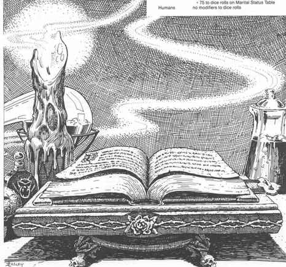

战役 · The Campaign
战役：社会阶级与地位 · The Campaign: Social Class and Rank
地下城主应决定每名角色在战役中所属的社会阶级，具体可使用下方的社会阶级表。请注意，此表本身不包含社会或政治方面的信息；紧随表格之后的参考资料中列有这类指引。这样，地下城主便可按照各自战役环境的风格塑造社会阶级差异。
| d% | 社会／经济阶级 | 缩写 |
|---|---|---|
| 01–04 | 下下阶级 Lower Lower Class | LLC |
| 05–10 | 中下阶级 Middle Lower Class | MLC |
| 11–20 | 上下阶级 Upper Lower Class | ULC |
| 21–35 | 下中阶级 Lower Middle Class | LMC |
| 36–55 | 中中阶级 Middle Middle Class | MMC |
| 56–87 | 上中阶级 Upper Middle Class | UMC |
| 88–96 | 下上阶级 Lower Upper Class | LUC |
| 97–99 | 中上阶级 Middle Upper Class | MUC |
| 00 | 上上阶级 Upper Upper Class | UUC |
典型成员
| 阶级 | 原书举例 |
|---|---|
| LLC | 获释奴隶、农奴、补锅匠、流浪者、乞丐、罪犯、低等级盗贼、低至中等级刺客 |
| MLC | 牧人、劳工、货郎、演员、杂耍艺人、武装随从、低等级野蛮人、中等级盗贼、高等级刺客、低等级吟游诗人 |
| ULC | 自由民、商贩、低级军官、货币兑换商、销赃者、低等级战士、高等级盗贼 |
| LMC | 工匠、手艺人、小商人、初级军官、银行家、无地骑士、德鲁伊、巡林客 |
| MMC | 有地乡绅、商人、小官员、高级军官、无地的小贵族、中等级战士、低等级魔法师和幻术师 |
| UMC | 行会大师、大商人、军队指挥官、官员、无地贵族、低等级牧师、高等级战士、中等级魔法师和幻术师 |
| LUC | 大地主、将军与元帅、高级官员、骑士、中等级牧师、骑士职业者、圣武士、高等级魔法师和幻术师 |
| MUC | 骑士、军队指挥官、高等级牧师、贵族、高等级圣武士、极高等级魔法师和幻术师 |
| UUC | 大贵族、统治贵族、王族 |
玩家角色的起始社会地位通常不影响起始金钱与装备，骑士和圣武士除外；两者按本书玩家部分“金钱”的规则。各职业、身份的归属可随战役背景调整。非人类种族的地位完全取决于战役设定；在人类社会中，原书给出以下一般参考：
| 种族 | 通常阶级 |
|---|---|
| 矮人 | MMC（因据说他们拥有黄金与宝石） |
| 精灵 | 林地精灵 ULC 至灰精灵 LUC |
| 侏儒 | ULC 至 LMC |
| 半身人 | ULC（体型小、乡土气息浓） |
| 半精灵 | 略高于处境相当的人类 |
| 半兽人 | LLC |
社会阶级与职业
一般而言，人物的社会地位不得比该战役环境中其职业所要求的阶级低超过一级。以上表为例，想成为战士的人不得低于 MLC；地位更低者不能进入战士职业。按原书这套例子，生于 LLC 的人物只能成为盗贼或刺客。各职业对应阶级仍须由地下城主结合战役社会决定。
战役：出生境况 · The Campaign: Circumstances of Birth
由于主题性质所限，关于如何确定角色在战役环境中的出身与背景，并没有太多可制定的“规则”。几乎所有这类决定都必须由各位地下城主作出，才能使结果自然融入他们设计的冒险环境。不过，对于想知道命运在角色何时、如何来到世上这件事中扮演了什么角色的人，以下表格可作为起点。
出生顺序表 Birth Table
| d% | 出生顺序 | d% | 出生顺序 |
|---|---|---|---|
| 01–05 | 独生子女 | 81–85 | 第七个孩子 |
| 06–10 | 第一个孩子 | 86–90 | 第八个孩子 |
| 11–20 | 第二个孩子 | 91–94 | 第九个孩子 |
| 21–35 | 第三个孩子 | 95–97 | 第十个孩子 |
| 36–50 | 第四个孩子 | 98–99 | 第十一个孩子 |
| 51–65 | 第五个孩子 | 00 | 第十二个孩子 |
| 66–80 | 第六个孩子 |
父母婚姻状况表 Parents’ Marital Status Table
| d% | 婚姻状况 |
|---|---|
| 01–80 | 父母合法结婚 |
| 81–00 | 父母未婚 |
父母未婚的孩子，其社会阶级通常比父亲低一级。
种族修正 · Racial Modifiers
除非另有注明，下列修正同时用于两张表的掷骰：
| 种族 | 出生顺序表 | 父母婚姻状况表 |
|---|---|---|
| 矮人（所有） | −15 | −15 |
| 黑暗精灵 Drow | −15 | −15 |
| 灰精灵 Gray | −30 | −30 |
| 高等精灵 High | −20 | −20 |
| 林地精灵 Wood | −10 | −10 |
| 其他精灵 | −15 | −15 |
| 侏儒（所有） | −20 | −20 |
| 半精灵 | −10 | −10 |
| 半身人（所有） | −10 | −10 |
| 半兽人 | +10 | +75 |
| 人类 | 无 | 无 |
